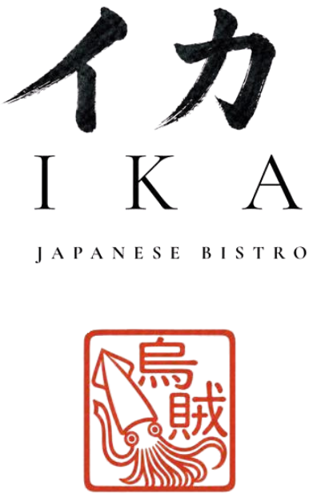
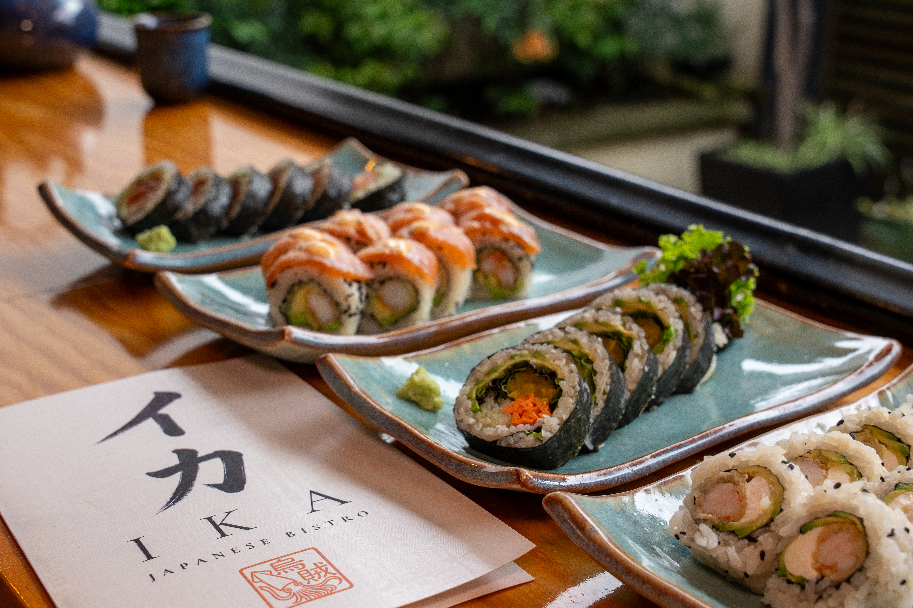

HOTARU IKA · ホタルイカ
Una luz que surge del mar.
La cocina de IKA honra la tradición japonesa a través de sus técnicas y sus ingredientes.

イカ / IKA JAPANESE BISTROLa belleza discreta de la cocina japonesa, sus técnicas y sus ingredientes. Descubre nuestra carta a tu ritmo.

日本の味IKA toma su nombre del Hotaru Ika, el calamar luciérnaga. Su luz representa el descubrimiento y la belleza discreta.
La cocina de IKA honra la tradición japonesa a través de sus técnicas y sus ingredientes.